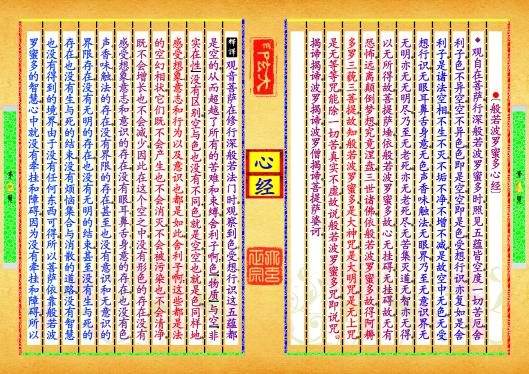
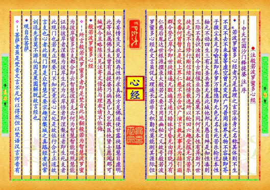
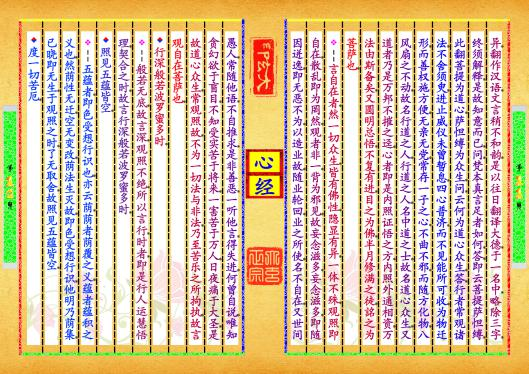
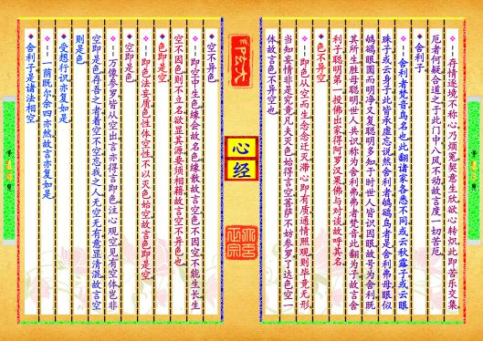
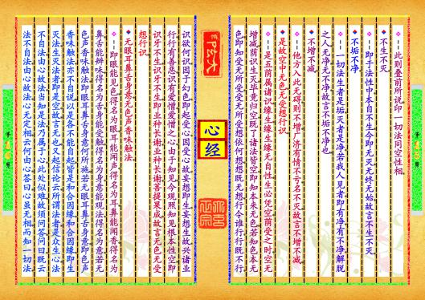

-
第【1-2】页 ▎⚫〔般若波罗蜜多心经〕▼观自在菩萨，行深般若波罗蜜多时，照见五蕴皆空，度一切苦厄。舍利子，色不异空，空不异色，色即是空，空即是色，受想行识，亦复如是。舍利子，是诸法空相，不生不灭，不垢不净，不增不减。是故空中无色，无受想行识，无眼耳鼻舌身意，无色声香味触法，无眼界，乃至无意识界，无无明，亦无无明尽，乃至无老死，亦无老死尽。无苦集灭道，无智亦无得。以无所得故，菩提萨埵，依般若波罗蜜多故，心无挂碍。无挂碍故，无有恐怖，远离颠倒梦想，究竟涅盘。三世诸佛，依般若波罗蜜多故，得阿耨多罗三藐三菩提。故知般若波罗蜜多，是大神咒，是大明咒，是无上咒，是无等等咒，能除一切苦，真实不虚。故说般若波罗蜜多咒，即说咒曰，揭谛揭谛，波罗揭谛，波罗僧揭谛，菩提萨婆诃。Θ观音菩萨在修行深般若法门时，观察到色、受、想、行、识这五蕴都是空的，从而超越了所有的苦难和束缚。舍利子啊！色＜物质＞与空＜非实在性＞没有区别，空与色也没有不同；色就是空，空也就是色。同样地，感受、想象、意志和行为以及意识也都是如此。舍利子啊！这些都是法的空幻相状，它们既不会产生也不会消灭，不会被污染也不会清净，既不会增长也不会减少。因此在这个空之中，没有形色的存在，没有感受、想象、意志和意识的存在，没有眼、耳、鼻、舌、身、意的存在，也没有色、声、香、味、触、法的存在，没有界限的存在，甚至也没有意识和无意识的界限存在。没有无明的存在，也没有无明的结束，甚至没有生与死的存在，也没有生与死的结束。没有烦恼集合与消散的道路，没有智慧也没有得到的境界。由于没有任何东西可得，所以菩萨依靠般若波罗蜜多的智慧，心中就没有牵挂和障碍。因为没有牵挂和障碍，所以预览书籍 全文配置
-
第【9-10】页 ▎⚫〔注般若波罗蜜多心经〕┉中天竺国沙门释提婆▂注并，序▼，般若波罗蜜多心经者。乃是真理之玄宗。法身之名称。其体则不生不灭。不去不来。量等虚空。曾无变改。广乃普周法界。无物不容。狭即芥子微尘。未足为喻。显即参罗万像。隐即无色无名。生死苦乐轮迁。本性轴元不动。四生三有。大圣共禀无差。此城他邦。凡愚自舛。是知性凑则三际不易。识浊则今古相催。业杂乃感果不同。何关本性有异。斯乃世徒乏志。不自修行。断信续疑。放情散逸。所以轮回六趣。受报无穷。苦乐交番。何曾暂止。是故上界仁慈。不悲含识。广演言教。无事无为。接引溺群。令登已岸。今即世徒缘逼。无暇遍寻。遂只暗昧守昏。无由得晓。乃有仁慈后胤。达世根源。撰录大般若之要言。用显幽秘之义。故号般若波罗蜜多心经也。文言虽促。义理遥长。若非久积勤功。莫能测其涯际。但为妄情生灭我见恒存。性外求真。他方觅佛。遂使甘露徒膳慧日虚明。此等纵属佛生。未曾有益。提婆乃病愚已久。岂敢医他。贤士愿闻。那可缄嘿。今且略陈浅见。注寄文傍。将与理乖。请不依侮。▼般若波罗蜜多心经❖¦所言般若波罗蜜多者。即是梵音。此地翻般若为智慧。波罗蜜为彼岸。蜜多言支。都合即云智慧彼岸支。云何为智慧。智能观照。慧能证悟。彼岸者。涅槃为彼岸。生死为此岸。悟者即涅槃。迷者即生死。支者此观门也。若无正观要门。不知究竟安心之处。是故依行合于正道。故言支也。心者。此观门即是众智慧之要宗。趣涅槃城之真路。经者。训常训迳。先圣莫不游从。因是果圆解脱。故言经也。▼观自在菩萨。❖¦菩萨者。虽是梵音。文言不足。何以得然。但以梵语汉言方音有预览书籍 全文配置
-
第【11-12】页 异。翻作汉语。文言稍不和韵。是以往日翻译大德。于一名中。略除三字。终须解释。是故知意而已。问。梵本真言足者如何。答。即云菩提萨怛缚。此翻菩提为道心。萨怛缚为众生。问。云何为道心众生。答。行者常观诸法。不舍须臾。进止威仪未曾暂息。四心普济。而不见能所可收。为物迁形。而善权施方便。无亲无党。常存一子之心。不曲不邪。而随方化物。八风扇之不动。故名行道之人。行道之人。名中道之士。故名道心众生。又道者乃是万邦不摧之迳。心者即是内照证悟之方。内照外通相资。万法由斯备矣。又圆明总悟。不复有进。目之为佛。半月修满之徒。詺之为菩萨也。❖¦言自在者。然一切众生。皆有佛性。隐显有异。一体不殊。观照即自在。散乱即为罔然。观者非一。背为邪见。故妄念滋多。妄念滋多。即随因迸逸。即无恶不为。以造业故。随业轮回。业之所使。名不自在。又世间愚人。常随他语。不自推求。是非善恶。一听他言。得失进。何曾自说。唯知贪幻欲于盲目。不知受实苦于将来。一害苦于万人。日夜痛于大圣。是故道心众生。常观照故。不为一切法与非法。乃至苦乐之所拘执。故言观自在菩萨也。▼行深般若波罗蜜多时。❖¦般若无底。故言深。观照不绝。所以言行。时者。即是行人运慧悟理。契合之时。故言行深般若波罗蜜多时。▼照见五蕴皆空。❖¦五蕴者。即色受想行识也。亦云荫。荫者荫覆之义。蕴者蕴积之义也。然荫性无迁。空无变改。荫法生灭故。即色受想行识。他明乃荫集。已晓即无生。于观照之时。了无取舍。故照见五蕴皆空。▼度一切苦厄。预览书籍 全文配置
-
第【13-14】页 ❖¦存情逐境不称心。乃烦冤。契意生欣。欲心转炽。此即苦乐交集。厄者何疑。合道之。于此门中。八风不动。故言度一切苦厄。▼舍利子。❖¦舍利者梵音。鸟名也。此翻诸家各悉不同。或云秋露子。或云眼珠子。或云身子。此皆承虚忘说。然舍利者。鸲鹆鸟者是。舍利弗母。眼似鸲鹆眼。圆而明净。又复聪明多知。于时世人皆识因眼。故号为舍利。既其所生。胜母聪明。世人共识。称为舍利弗。弗者梵音。此翻为子。故言舍利子。聪明第一。投佛出家。得阿罗汉果。佛与对谈。故呼其名。▼色不异空。❖¦即色从空而生。念念迁灭。滞心即有质。通情照观。则毕竟无形。当知妄情非是究竟。凡夫灭色。始得言空。菩萨不妨参罗。了达色空一体。故言色不异空也。▼空不异色。❖¦即空中生色。缘会故名色。缘散故言空。色不因空。不能生长。生空不因色。则不立名。欲显其源。要须相藉。故言空不异色也。▼色即是空。❖¦即色法妄质。色性体空性。不以灭色始空。故言色即是空。▼空即是色。❖¦万像参罗。皆从空出。言亦得言即色。注心观空。见有空体。岂非空即是色。存吾之者。着空不空。忘我之人。无空无有。意显清混。故言空则是色。▼受想行识。亦复如是。❖¦一荫既尔。余四亦然。故言亦复如是。▼舍利子。是诸法相空。预览书籍 全文配置
-
第【15-16】页 ❖¦此则叠前所说。印一切法同空性相。▼不生不灭。❖¦即于法性中。本自不生。今即无灭。无终无始。故言不生不灭。▼不垢不净。❖¦一切法生者是垢。灭者是净。若我人见者。即有净。有不净。解脱之人。无净。无不净。故言不垢不净也。▼不增不减。❖¦他方入此无碍。则不增。广济有情不亏。名不灭。故言不增不减。▼是故空中无色。无受想行识。❖¦是五荫属诸识。缘生。缘生缘无自性。生必凭空。荫受之时。空无增减。荫识生灭。毕竟归空。既了诸法皆空。即知本来无色。若知色本无色。即知受无所受。受无所受想依何想。想既无想。行令谁行。行既不行。识欲何识。因于幻色。即起受心。因受心故。妄想即生。妄想生故。兴诸业行。行有善恶。识有爱憎。爱憎之心。由于知见。今观照知见根本性空。即识牙不生。识牙不生。即业种长谢。业种长谢。菩提果成。故言无色无受想行识。▼无眼耳鼻舌身意。无色声香味触法。❖¦即眼能见色。得名为眼。耳能闻声。得名为耳。鼻能闻香。得名为鼻。舌能辨味。得名为舌。身能受触。得名为身。意能观法。得名为意。若无色声香味触法。即眼耳鼻舌身意何所施。若无眼耳鼻舌身意。即色声香味触法。亦不自说。以是各不能自起。皆是和合因缘。和合因缘。即生灭法。生灭法者。即是空。故。言无也。又起信论云。所谓法者。是众生心。法不自法。由心故法。当知是法。乃属于心。此处似难。故须问答。问曰。既云法不自法。由心故法。心无定相。云何由心。答曰。心虽无相。而知一切法。预览书籍 全文配置